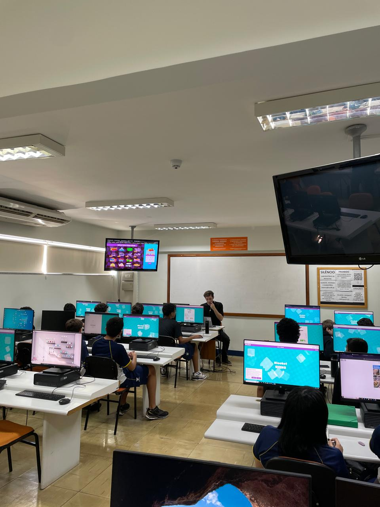

HTML
Relatório – 20ª Aula
Data: 17/08/2026
Turma: 8º e 9º ano
Instrutor:Fatobene
Relatório – Forms e Blooket
Começamos a aula tirando um momento para os alunos que não entregaram a atividade de criação de um forms da semana passada terminarem seus códigos e entregarem no classroom, ficamos mais da metade da aula ajudando os alunos, como nao foi passado nenhum conteúdo nesse dia, foi bem tranquilo. Depois que todos os alunos terminaram suas atividades o Fatobene passou alguns Blookets para os alunos jogarem com o conteúdo das últimas aulas. Hoje foi uma aula bem tranquila e os alunos conseguiram ir bem nos jogos de revisão.
